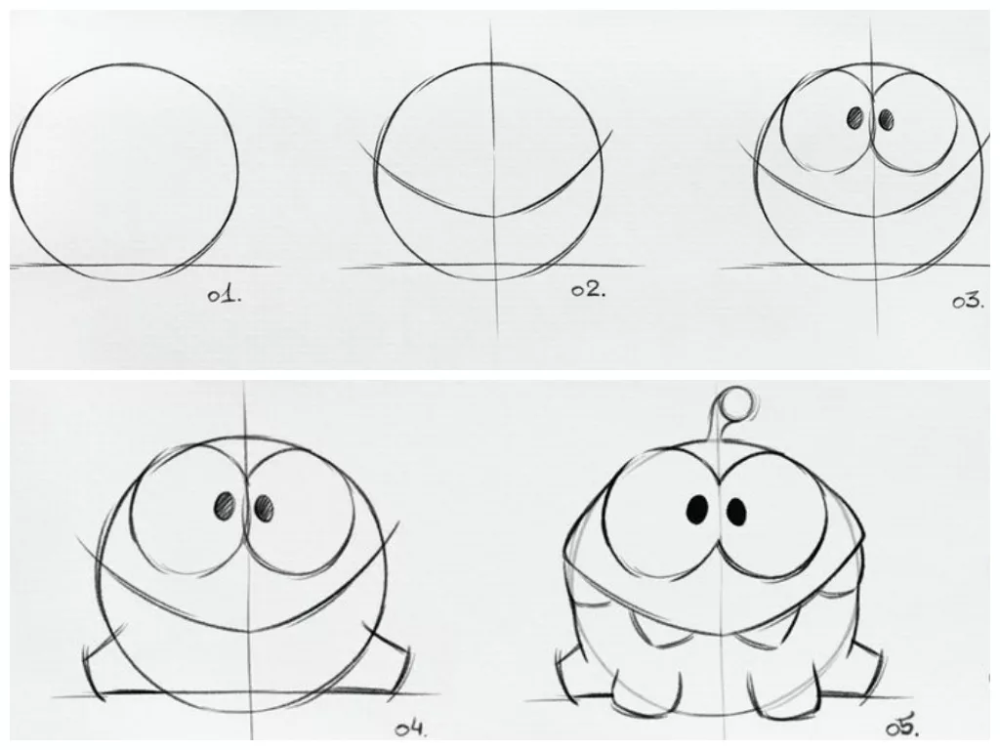

Ам Ням
Кто такой Ам Ням?
Ам Ням — главный герой популярной головоломки Cut the Rope. Это маленький зелёный монстрик с большими глазами и широкой улыбкой. Его внешний вид очень милый и забавный, что делает его любимым персонажем многих детей и взрослых.

История Ам Няма
История создания Ам Няма началась с желания разработчиков создать персонажа, который бы нравился людям всех возрастов. Долго искали подходящий образ и остановились на варианте маленького зелёного монстрика с большими глазами. Ам Ням сразу же завоевал сердца игроков по всему миру.
Актуальность Ам Няма
Ам Ням стал настолько популярным, что вокруг него появилась целая вселенная. Он появляется в мультфильмах, книгах, игрушках и других продуктах. Выпущены мобильные приложения и игры с Ам Нямом, которые успешны по всему миру, а также скоро в сети ресторанов "Вкусно и точка" будут наборы с ним.